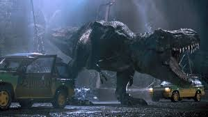

Witaj w naszym parku !
Serdecznie witamy w Parku Jurajskim, miejscu, gdzie historia spotyka się z teraźniejszością, a marzenia o podróży w czasie stają się rzeczywistością! Nasz park to nie tylko atrakcja turystyczna, ale prawdziwe okno do przeszłości, które pozwala nam zrozumieć i docenić fascynujący świat dinozaurów i prehistorycznych ekosystemów. Jesteśmy niezwykle podekscytowani, że możemy podzielić się z Tobą tym niesamowitym doświadczeniem, które na zawsze zmieni Twoje spojrzenie na świat prehistorycznych gigantów. Gdy tylko przekroczysz progi naszego parku, natychmiast poczujesz atmosferę pełną oczekiwania i przygody. Nasze starannie zaprojektowane wejście wita gości imponującą bramą, stylizowaną na pradawne skały i pokrytą tropikalną roślinnością. To wprowadzenie już na samym początku sugeruje, że jesteś na progu odkrycia czegoś absolutnie niezwykłego. Personel parku, ubrany w stroje nawiązujące do epoki dinozaurów, z uśmiechem powita Cię i zapewni wszelkie niezbędne informacje, aby Twoja wizyta była jak najbardziej komfortowa i ekscytująca. Naszym celem było stworzenie miejsca, gdzie historia i teraźniejszość mogą współistnieć w harmonii, oferując odwiedzającym wyjątkowe doświadczenie edukacyjne i rozrywkowe. W Parku Jurajskim zastosowaliśmy najnowsze osiągnięcia technologiczne, aby przenieść Cię w czasie i pokazać świat takim, jaki był miliony lat temu. Dzięki współpracy z czołowymi paleontologami, inżynierami i artystami, stworzyliśmy środowisko, które jest tak realistyczne, że będziesz miał wrażenie, jakbyś rzeczywiście cofnął się do epoki mezozoiku.Wybierz artykuł z naszego Parku z ostatniego tygodnia
Wypadek przy pracy
W ciemności nocy na Jurassic Parku, kiedy tysiące lat prehistorycznej historii splata się z nowoczesną technologią, wydarzyło się coś niespotykanego. Nagle, jakby na rozkaz, światło zgasło, zostawiając gości i personel w zupełnej ciemności. Elektryczne ogrodzenie, które dotąd oddzielało ich od potencjalnego niebezpieczeństwa, nagle przestało iskrzyć, a mroczna cisza wypełniła przestrzeń. Zaklęte w mroku, dźwięki dinozaurów stały się głośniejsze. Hałas kroków i łupieżców nagle przyciągnął uwagę tych, którzy wcześniej czuli się bezpieczni. Raptory, zwykle opisywane jako inteligentne i podstępne, zaczęły się zebrać wokół ogrodzenia, ich cienie poruszające się jak upiory w ciemności. Panika ogarnęła każdego. Goście, którzy przed chwilą podziwiali olbrzymie stworzenia z daleka, teraz szukali desperacko schronienia, świadomi, że w tej ciemności są całkowicie bezbronne. Personel parku usiłował zachować spokój, ale w ich oczach malował się niepokój. Wśród strachu i chaosu pojawiły się pytania: Co się stało? Czy to tylko awaria techniczna, czy może coś więcej? Czy dinozaury mogą zrozumieć, że ogrodzenie już nie działa? W mroku, w którym nawet najmniejszy dźwięk zdawał się być zagrożeniem, park tonął w ciszy, tylko przerywanej przez szepcze i stłumione krzyki. Jurassic Park, który wcześniej wydawał się być miejscem cudów i fascynujących odkryć, teraz stał się areną walki o przetrwanie w bezdusznej nocy.
Zamknięcie na 5 minut
 tu byl skibidi toilet
tu byl skibidi toilet
Zamknięcie parku na Jurassic Parku wywołało lawinę reakcji, której skutki były odczuwalne na każdym poziomie. Oto opis sytuacji: Długie, metaliczne bramy parku, które zwykle były otwarte dla entuzjastów przygód, teraz ostro trzasnęły z odgłosem ostatecznego zamykania. Zatrzaśnięcie bram było symbolicznym aktem, który oznaczał koniec dni otwartych drzwi dla gości. Personel parku, który wcześniej tłoczył się w korytarzach, pracując nieustannie nad różnymi aspektami atrakcji i bezpieczeństwa, teraz działał zdecydowanie i szybko. Ich zadaniem było zapewnienie, że każde zwierzę znajdujące się w parku zostanie bezpiecznie odseparowane od ludzi i innych stworzeń. Komunikat o zamknięciu parku został szybko przekazany zarówno gościom, jak i personelowi. Wielki transparent na bramie parku wyświetlał ostrzeżenie o zamknięciu, a megafony wzdłuż alei przekazywały komunikaty o konieczności natychmiastowego opuszczenia terenu. Goście, którzy wcześniej przybyli z nadzieją na niezapomnianą przygodę, teraz opuszczali park z poczuciem zawodu i dezorientacji. Wielu z nich zdawało sobie sprawę z powagi sytuacji, widząc personel parku, który poruszał się zdecydowanie i z koncentracją na twarzach. Na terenie parku zapanowała cisza, którą przerywały jedynie odgłosy przygotowań do zamknięcia. W tym czasie personel parku pracował nieustannie, aby zapewnić, że każde zwierzę będzie bezpieczne i odseparowane od ludzi, dopóki sytuacja nie zostanie ostatecznie rozwiązana. Zamknięcie parku było koniecznością, która miała na celu zapewnienie bezpieczeństwa gościom, personelowi i zwierzętom. Było to również symboliczne zakończenie pewnego rozdziału w historii Jurassic Parku, podkreślające wagę i odpowiedzialność, jakie niosło za sobą prowadzenie takiego miejsca.
Dokarmianie...

Dokarmianie dinozaurów w Jurassic Parku było nie tylko ważnym elementem ich codziennej opieki, ale także spektakularnym wydarzeniem, które przyciągało uwagę personelu i gości parku. Procedura ta była starannie zaplanowana i przeprowadzana przez wyszkolony personel, który wykorzystywał specjalne pojazdy i sprzęt do bezpiecznego dostarczania posiłków do różnych gatunków dinozaurów. Zwykle dokarmianie odbywało się w specjalnie wyznaczonych strefach, z dala od oczu gości, aby zapewnić bezpieczeństwo zarówno dla ludzi, jak i dla zwierząt. Pracownicy parku dbali o to, aby każdy posiłek był zróżnicowany i dostosowany do specyficznych potrzeb żywieniowych różnych gatunków dinozaurów, zapewniając im odpowiednią ilość składników odżywczych. Podczas dokarmiania, personel nie tylko dostarczał posiłki, ale także monitorował zachowanie i stan zdrowia zwierząt. To było doskonałe okazje do obserwacji dinozaurów w ich naturalnym środowisku oraz szybkiego zauważenia ewentualnych problemów zdrowotnych czy nieprawidłowych zachowań. Niektóre dokarmienia były również okazją do prowadzenia badań naukowych nad zachowaniem i żywieniem dinozaurów, co pozwalało na lepsze zrozumienie ich potrzeb i funkcjonowania w środowisku parku. Cała procedura była nie tylko niezbędna dla zdrowia i dobrostanu dinozaurów, ale także dodawała wyjątkowego klimatu i tajemniczości atmosferze Jurassic Parku, przypominając o niezwykłym połączeniu prehistorycznej przeszłości z nowoczesną technologią i nauką.
Konkurs 2024
Opis Konkursu
Jurassic Park zaprasza do udziału w konkursie fotograficznym, który pozwala uwiecznić fascynujący świat prehistorycznych gigantów. Uczestnicy mają okazję fotografować najbardziej realistyczne rekonstrukcje dinozaurów w różnych częściach parku i udostępniać swoje najlepsze zdjęcia. Konkurs zachęca do eksploracji różnorodnych scen, od dinozaurów w naturalnym otoczeniu po sceny życia prehistorycznego. Każde zdjęcie może stać się unikalnym ujęciem, przenosząc widza w fascynujący świat dinozaurów.
Jak Wziąć Udział?
Polub wszystkie nasze kanały na mediach społecznościowych.
Sfotografuj realistyczne rekonstrukcje dinozaurów w parku.
Prześlij swoje najlepsze zdjęcia na nasze media społecznościowe.
Kryteria Oceniania
Estetyka i jakość fotografii.
Oryginalność i kreatywność ujęć.
Związek z tematem konkursu i uchwycenie atmosfery Parku Jurajskiego.
Do Wygrania
1. Ekskluzywna Wycieczka po Parku Jurajskim
2. Roczny Karnet VIP (Obniżka cen wszelkich atrakcji o 80%)
3. Weekendowy Pobyt w Tematycznym Hotelu
Wymagania
Uczestnicy muszą mieć ukończone co najmniej 18 lat.
Uczestnicy muszą być w dobrym stanie fizycznym i psychicznym, aby wziąć udział w działaniach konkursowych.
Zgoda na Przetwarzanie Danych
Uczestnictwo w Mediach Społecznościowych Parku
Może być wymagane przedstawienie zaświadczenia lekarskiego potwierdzającego brak przeciwwskazań zdrowotnych.
Prosimy przesyłać zgłoszenia na nasz adres e-mail: jurrasicpark@gmail.com